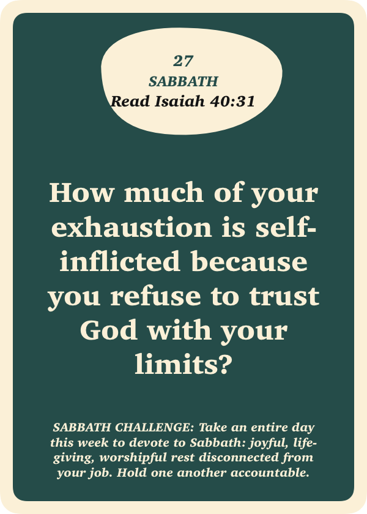

Card 27 · Sabbath
CARD 27
Stopping one day a week to delight in God.

Someone sent you this card to think about. Sit with the question this week, then talk it through with them.
Read Isaiah 40:31Card 27 · Sabbath
Stopping one day a week to delight in God.

Someone sent you this card to think about. Sit with the question this week, then talk it through with them.
Read Isaiah 40:31